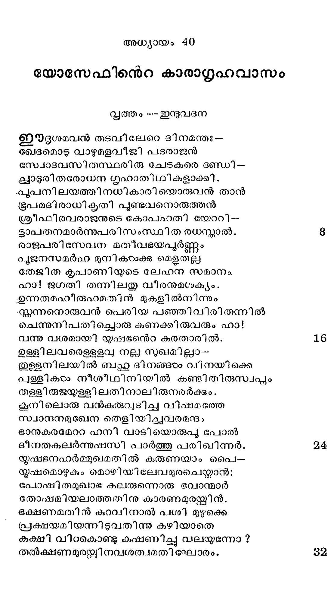
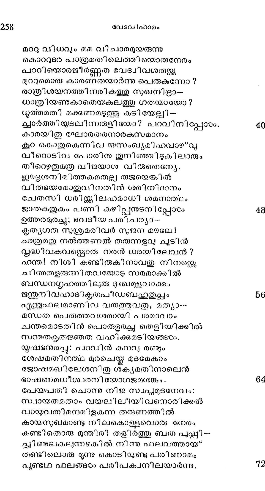
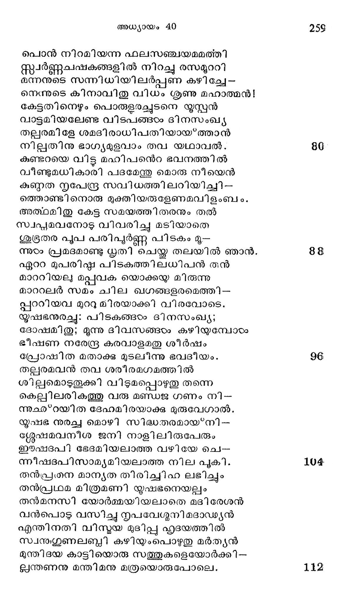

യോസേഫിനെറ കാരാഗ്രഹവാസം
വൃത്തം --ഇന്ദുവദന
ഈദൂശമവന് തടവിലേറെ ദിനമന്തഃ--
ഖേദമൊടു വാഴുമളവീജി പദരാജന്
സ്വോദവസിതസ്ഥരിരു ചേടകരെ ദണ്ഡി -
ചാദുരിതരോധന ഗൃഹാതിഥികളാക്കി.
.പുപനിലയത്തിനധികാരി യൊരുവന് താന്
ഭൂപമദിരാധികൃതി പുണ്ടവനൊരുത്തന്
ശ്രീഫിരവരാജനുടെ കോപഹതി യേററി-
ടാപതനമാര്ന്നുപരിസംസ്ഥിത രധസ്താല്.
രാജപരിസേവന മതീവഭയപൂര്ണ്ണം
പുജനസമര്ഹ മുനികഠംക്കു മെളതല്ല
തേജിത കൃപാണിയുടെ ലേഹന സമാനം.
ഹാ! ജഗതി തന്നിലതു വീരനുമശക്യം.
എന്നതമഹീരുഹമതിന് മുകളില്നിന്നും
സന്തന്നനൊരുവന് പെരിയ പഞ്ഞിവിരിതന്നില്
ചെന്നുനിപതിച്ചൊരു കണക്കി രുവരും ഹാ!
വന്നു വശമായി യഷഭനന്െറ കരതാരില്.
ഉള്ളിലവരെള്ളളവ് നല്ല സുഖമിലാ-
തുളളനിലയിൽല് ബഹു ദിനങ്ങടം വിനയിക്കെ
പുള്ളികഠം നീശീഥിനിയില് കണ്ടിതിരുസ്വപ്പം
തള്ളിരുജയ്ള്ളി ലതി നാലിരുനരര്ക്കും.
കൂനിലൊരു വന്കുരുവുദിചച വിഷമത്തേ
സ്വാനനമുഖേന തെളിയിച്ചവരമന്ദം
ഭാനുകരമേററ ഹനി വാടിയൊരുപു പോല്
ദീനതകലര്ന്നുഷസി പാര്ത്തു പരിഖിന്നര്.
യൂഷഭനഹര്മ്മുഖമതില് കരുണയാം പൈ--
യൂഷമൊഴുകും മൊഴിയിലേവമുരചെയ്താന്:
പോഷിതമുഖാഭ കലരുന്നൊരു ഭവാന്മാര്
തോഷമിയലാത്തതിനു കാരണമുരന്ക്കിന്.
ഭക്ഷണമതിന് കുറവിനാല് പശി മുഴുക്കെ
പ്രക്ഷയമിയന്നിടുവതിന്നു കഴിയാതെ
കുക്ഷി വിറകൊണ്ടു ക്ഷണിച്ചു വലയുന്നോ?
തല്ക്ഷണമുരയ്ക്കിനവശത്വമതി ഘോരം.

മററു വിധവും മമ വിചാരമുയരുന്നു
കൊററുടഭര പാത്രമതിലെത്തിയൊരുനേരം
പററിയൊരജീര്ണ്ണത ഭവദ്വിവശതയു
മുററുമൊരു കാരണതയാര്ന്നു പെരുകുന്നോ ?
രാത്രിശയനത്തിനരികത്തു സുഖനിദ്രാ--
ധാത്രിയണുകാതെയകലത്തു ഗതയായോ?
ധുത്തമതി മക്കണമടുത്തു കടിയേല്ലി--
ക്വാർത്തിയുടലിന്നരുളിയോ? പറവിനിപ്പോടം.
കാരയിതു ഘോരതരനാരകസമാനം
കൂറ കൊതുകെന്നിവ യസംഖ്യമിഹവാഴ*വു
വീറൊടിവ പോരിനു തുനിഞ്ഞിടുകിലാരും
തീറെഴുതുമത്ര വിജയാശ വിരുതെനേയേ.
ഈദൃദൃശനിമിത്തകമതല്ല രുജയെങ്കില്
വിതഭയമോതുവിനതിന് ശരിനിദാനം
ചേതസി ധരിജ്കിലഹമാധി ശമനാത്ഥം
ജാതകതുകം പണി കഴിപ്പനുടനി പ്പോഠം
ഉത്തരമുരച്ചു; ഭവദീയ പരിചര്യാ-
കൃത്യഗത സുശ്രമരിവര് സുജന മയലേ!
കരത്രമതു നല്ത്തണൽ തരുന്നുളവു ചൂുടിന്
സൃദ്ധിവകവന്കൊരു നരന് ധരയിലേവന് ?
ഹന്ത! നിശി കണ്ടിരുകിനാവതു നിനന്കെ
ചിന്തതളരുന്നിതവയോട സമമാക്കില്
ബന്ധനഗ്രഹത്തിലുരു ദുഃഖമുളവാക്കും
ജന്തുനിവഹാദികൃതപീഡബഷുതുച്ഛം
എത്തുഫലമാണിവ വരുത്തുവതു, മത്യാ--
മന്ധത പെരുത്തവശരായി പരമാവാം
ചന്തമൊടതിന് പൊരുളരച്ച തെളിയിക്കില്
സന്തതകൃതജ്ഞത വഹിക്കുമടിയങ്ങരം.
യൂഷഭനുരച്ചു: പറവിന് കനവ രണ്ടും
ശേഷമതിനത്ഥ മുരചെയ്ത മുദമേകാം
ജോഷമഖിലേശനിതു ശക്ൃയമതിനാലെന്
ഭാഷണമധീശ്വരനിയോഗജമശങ്കം.
പേയപതി ചൊന്നു നിജ സ്വപ്പമുടനേവം:
സ്വായതമതാം വയലിലീയിവനൊരിക്കല്
വായ്യവതിമന്ദമിളകുന്ന തരുണത്തില്
കായസുഖമാണ്ടു നിലകൊള്ളവൊരു നേരം
കണ്ടിതൊരു മുന്തിരി തളിര്ത്തു ബത പുപ്പി--
ചവിണ്ടലകലന്നഴകില് നിന്നു ഫലവത്തായ
തണ്ടിലൊരു മൂന്നു കൊടിയുണ്ടു പരിണാമം
പുണ്ടഥ ഫലങ്ങടം പരിപക്വനിലയാര്ന്നു.

പൊന് നിറമിയന്ന ഫലസഞ്ചയമമത്തി
സ്്വര്ണ്ണചഷകങ്ങളില് നിറച്ചു രസമൂററി
രന്നനുടെ സന്നിധിയിലര്പ്പണ കഴിച്ചേ --
നെന൯ുടെ കിനാവിതു വിധം ശൃണു മഹാത്മന്!
കേട്ടതിനെഴും പൊരുളരചൂടനെ യൂസ്പന്
വാട്ടമിയലേണ്ട വിടപങ്ങഠം ദിനസംഖ്യ
തല്ലരമിളേ ശമദിരാധിപതിയായ്ത്താന്
നില്ലതിനു ഭാഗ്യമുളവാം തവ യഥാവല്.
കുണ്ടറയെ വിട്ട മഹിപനെറ ഭവനത്തില്
വീണ്ടുമധികാരി പദമേന്തു മൊരു നീയെന്
കുണ്ഠത ന്ൃപേന്ദ്ര സവിധത്തിലറിയിച്ചി--
ത്തൊണ്ടി നൊരു മുക്തിയരുളേണമവിളംബം.
അത്ഥമിതു കേട്ട സമയത്തിതരനും തല്
സ്വപ്പമവനോട$ വിവരിച്ചു മടിയാതെ
ശുഭ്രതര പൂപ പരിപൂർണ്ണ പിടകം മൂ--
ന്നുടം പ്രമദമാണ്ടു ധൃതി ചെയ്തു തലയില് ഞാന്.
ഏററ മുപരി്മ പിടകത്തിലധിപന് തന്
മാററിയല മപ്പവക യൊക്കയ മിരുന്നു
മാററലര് സമം ചില ഖഗങ്ങളരമെത്തി-
പ്പററിയവ മുററു മിരയാക്കി വിരവോടെ.
യൂഷഭനുരച്ചു: പിടകങ്ങഠം ദിനസംഖ്യ;
ദോഷമിതു; മൂന്നു ദിവസങ്ങഠം കഴിയുമ്പോടം
ഭീഷണ നരേന്ദ്ര കരവാളമതു ശീര്ഷം
പ്രോഷിത മതാക്കു മുടലിന്നു ഭവദീയം.
തല്ലരമവന് തവ ശരീരമഗമത്തില്
ശില്പമൊടുതൂക്കി വിടുമപ്പൊഴുതു തന്നെ
കെല്പലിലരികത്തു വരു മണ്ഡജ ഗണം നി--
്ന൭ഛ൪”റയിത ദേഹമിരയാക്കു മുരുവേഗാല്.
യൂഷഭ നുരച്ച മൊഴി സിദ്ധതരമായ*നി -
ശ്ശലേഷമവനീശ ജനി നാളിലിരുപേരും
ഈഷദപി ഭേദമിയലാത്ത വഴിയേ ചെ-
ന്നീഷദപിസാമ്യമിയലാത്ത നില പൂകി.
തന്പ്ര൭ന മാന്യത തിരിച്ചിഹ ലഭിച്ചും
തന്പ്ര/ഥമ മിത്രമണി യൂഷഭനെയല്പം
തന്മനസി യോര്മ്മയിയലാതെ മദിരേശന്
വന്പൊടു വസിച്ചു ന്യപവേഗ്ുനി മദാഡ്്യന്
എന്തിനതി വിന്യയ മുടിപ്പു ഹൃദയത്തില്
സ്വനുഗൂണലബ്ബി കഴിയംപൊഴുതു മര്ത്യന്
മുന്തിദയ കാട്ടിയൊരു സത്തുകളെയോര്ക്കി-
ലന്തണനു മന്തിമനു മത്രയൊരുപോലെ.
